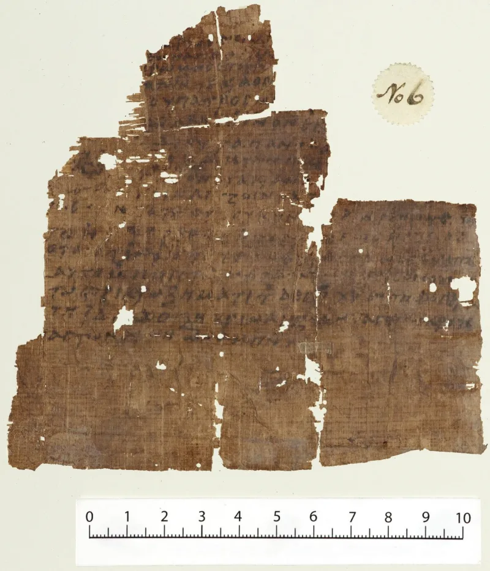
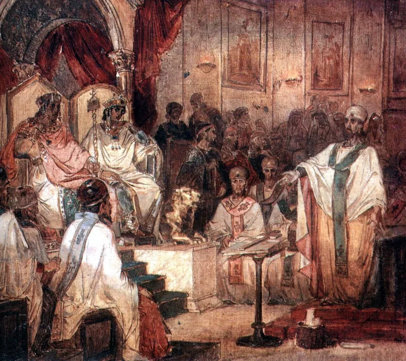
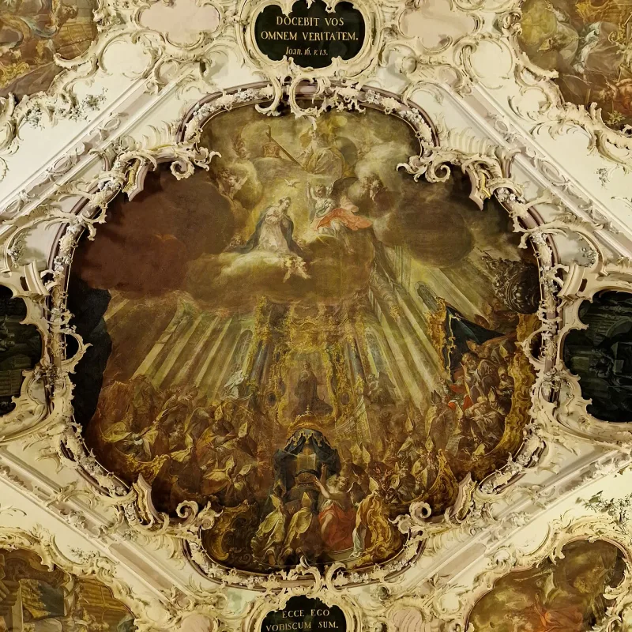

Muslim scholars have a real answer here. Say so before your friend does.
Quran 5:116 has Allah question Jesus: "Did you say to people, take me and my mother as two gods besides Allah?" This is the only place the Quran names the members of the godhead it rejects. It names Mary, not the Holy Spirit.
No Christian creed has ever put Mary in the Trinity. Not in the East, not in the West, not once.
Quran 5:75 also pairs Jesus and Mary as two who ate food — the two honoured creatures.
There are two levels, and the second is much stronger. The popular one says the verse targets a real group.
Epiphanius, who died in 403, describes the Collyridians, Arabian women who offered cakes to Mary as a goddess. The academic one is used by Gabriel Said Reynolds, Sidney Griffith, Mun'im Sirry and David Thomas.
On that reading 5:116 is not a report of doctrine at all. It warns against excessive honour paid to Jesus and Mary, which was visibly practised.
There is no evidence the Collyridians existed in 7th-century Arabia. The sect is attested once, 250 years earlier.
Much classical tafsir read 5:116 as what Christians really believed. So the rhetoric-only reading is partly a modern retreat.
Genuinely arguable. Saying "strawman, full stop" overclaims.
But one point stands. The Quran never states the actual Trinity — one Being, three Persons — in order to answer it.
That silence is what to press, gently.
"Christians have never believed Mary is part of the Trinity. Would you like me to tell you what we do believe?"



They say the verse warns against too much honour for Mary, not the creed.
There are two levels to the answer, and the second is stronger. The popular one says the verse targets a real group. Epiphanius, who died in 403, describes the Collyridians. They were Arabian women who offered cakes to Mary as a goddess. On that reading the Quran corrects them, not Nicaea.
The academic answer is used by Gabriel Said Reynolds, Sidney Griffith, Mun'im Sirry and David Thomas. On their reading 5:116 is not a report of doctrine at all. It is end-times rhetoric. It warns against the drift toward excessive honour paid to Jesus and Mary. That drift was visible in icons and in Theotokos devotion, calling Mary the Mother of God. The verse gives examples of shirk, putting others beside Allah, rather than defining the Trinity.
Both sides have a case, but the Quran never states the creed it answers.
The warning reading is a genuine steelman with mainstream academic backing. So 'strawman, full stop' overclaims. But that steelman has costs Muslims rarely price in. There is no evidence the Collyridians existed in 7th-century Arabia. The sect is attested once, 250 years earlier. Much of the classical tafsir read 5:116 as what Christians actually believed. So the rhetoric-only reading is partly a modern retreat.
And even granting the rhetoric, one gap remains. The Quran nowhere states the real formula — Father, Son and Spirit, one being — in order to refute it. A book claiming to know all things, sent to correct Christians, never once describes correctly the doctrine it condemns. That silence is the lasting point.